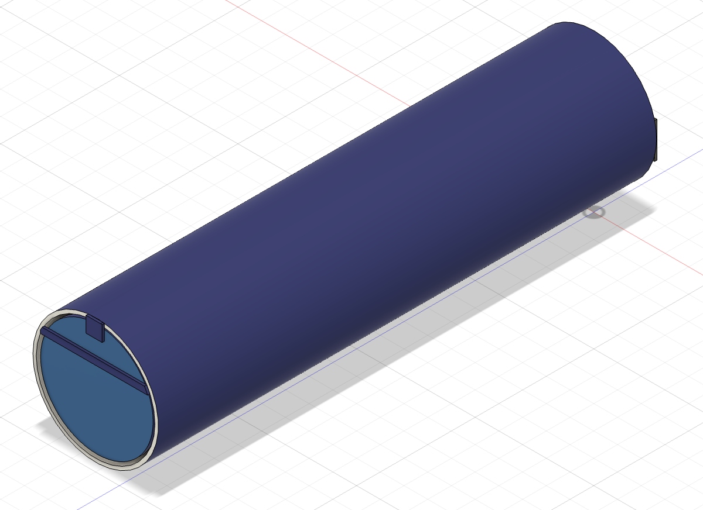
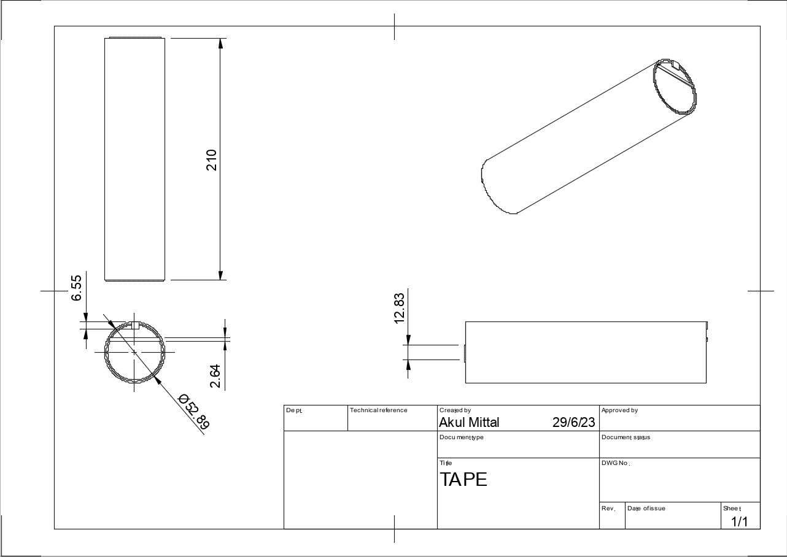
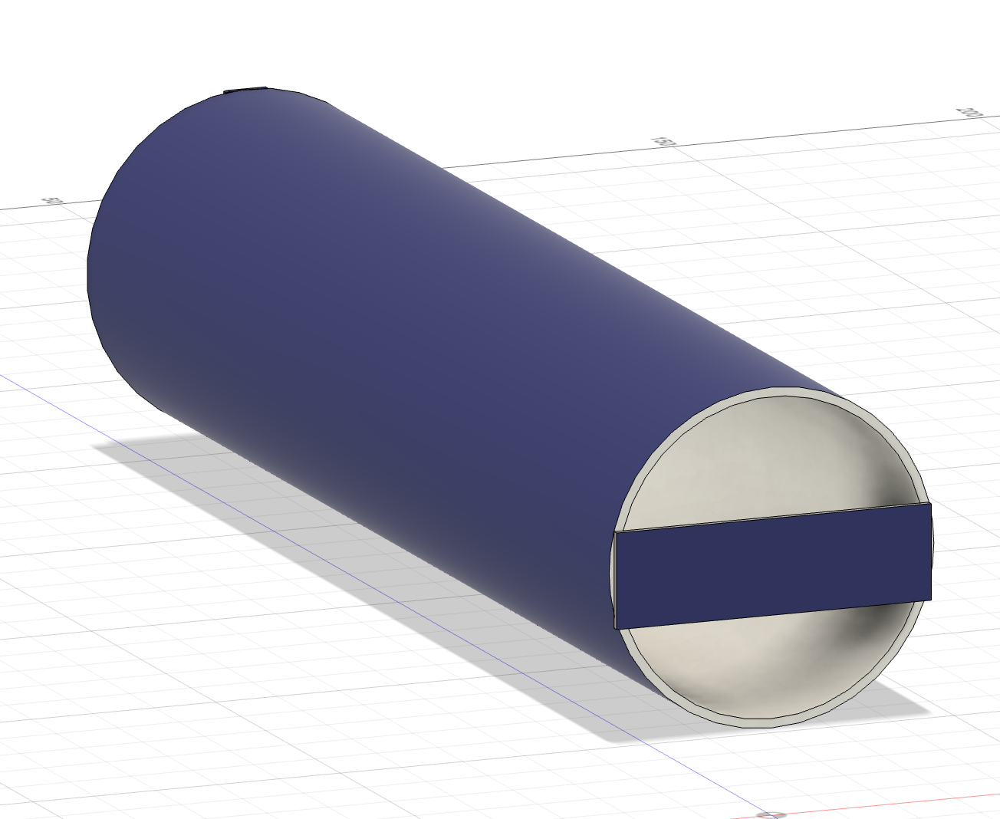
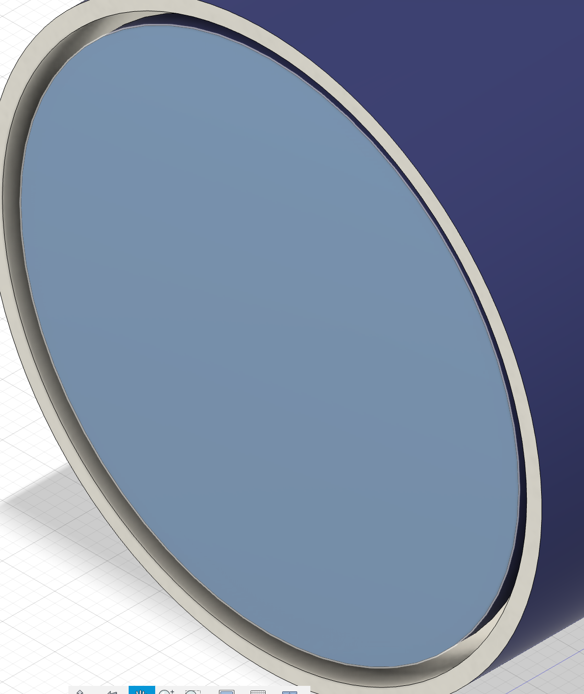
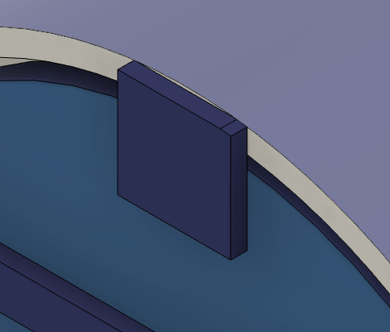
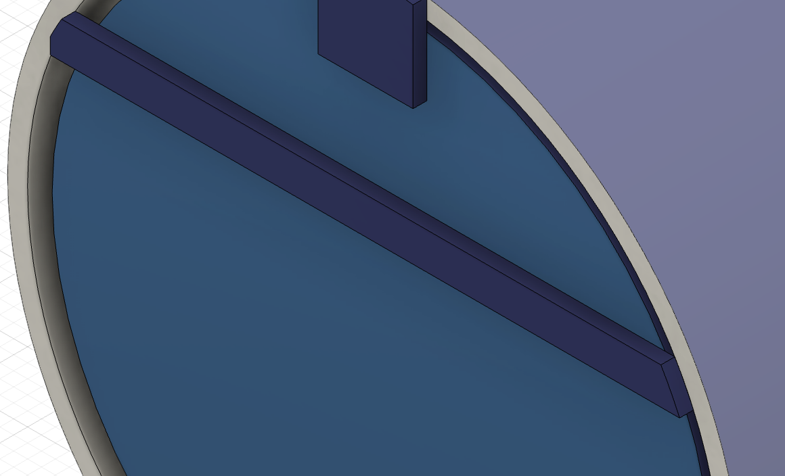

Mouse Trap

Investigations in Engineering
Geneustace Wicaksono, Akul Mittal
JHU-CTY 2023
Abstract
This mouse trap works by a one-way trapdoor. The mouse is lured in one side, and goes through the trapdoor, but is unable to come out. Our solution will be tested by launching a ping pong ball into the trap, and shaking it.
Materials
- A4 paper.
- A roll of masking tape.
- A brain

Procedure
- Take the paper and line one side with tape. This will make the structure more rigid.
- Take a long strip of tape (21cm). Roll up the paper on the long side, (hamburger) and use the strip of tape to keep it rolled up.
- Attatch a 3 inch piece of tape to one of the openings horizontally

- Fold a piece of paper 4 times, and cut it into the shape of the opening of the paper.
- Attach the piece of paper into the opening with a piece of tape. This will create a “hinge”
- Create a “stopper” by attaching a 3 in x .5in piece of tape half an inch from the “hinge” of the door. Attach it using tape. 